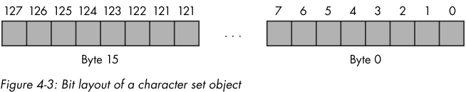
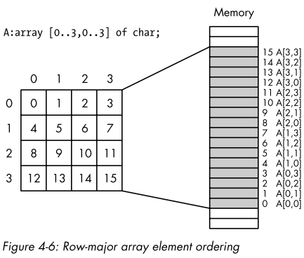
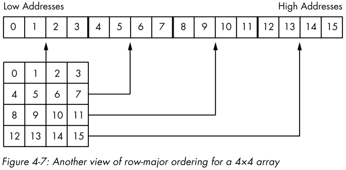

Contents
有符号整型相乘指令。
intmul(constant, destreg16);
intmul(constant, destreg32);
上面语句的语义相当于高级语言里的：
destreg = destreg * constant;
destreg *= constant;
intmul(constant, srcreg16, destreg16);
intmul(constant, srcmem16, destreg16);
intmul(constant, srcreg32, destreg32);
intmul(constant, srcmem32, destreg32);
上面语句的语义相当于高级语言里的：
dest = src * constant;
intmul(srcreg16, destreg16);
intmul(srcmem16, destreg16);
intmul(srcreg32, destreg32);
intmul(srcmem32, destreg32);
上面语句的语义相当于高级语言里的：
dest = dest * src;
dest *= src;
intmul和add/sub不一样的就是，intmul的结果存放位置必须是一个寄存器，而且它不支持8位整型的操作。
检查寄存器中的值是否在某个范围之内。
bound(reg16, LBconstant, UBconstant);
bound(reg32, LBconstant, UBconstant);
bound(reg16, Mem16[2]); // [2]表示为存储器中两个连续的字
bound(reg32, Mem32[2]); // [2]表示为存储器中两个连续的双字
它的语义类似于高级语言中的：
LBconstant <= reg16/reg32 <= UBconstant
Mem16[0] <= reg16 <= Mem16[2]
Mem16[0] <= reg32 <= Mem32[4]
如果指定的寄存器值不在指定范围内，则会引发异常ex.BoundInstr。
Note
80x86不存在bound(reg, LBconstant, UBconstant)这种格式的指令。
HLA是通过生成两个连续的只读的内存变量，来实现该格式的指令，本质上还是用bound(reg, Mem[2])。
program BoundDemo;
#include("stdlib.hhf")
static
InputValue: int32;
GoodInput: boolean;
begin BoundDemo;
repeat
mov(false, InputValue);
try
stdout.put("Enter an integer between 1 and 10: ");
stdin.flushInput();
stdin.geti32();
mov(eax, InputValue);
bound(eax, 1, 10);
mov(true, GoodInput);
exception(ex.ConversionError)
stdout.put("Illegal numeric format, re-enter", nl);
exception(ex.ValueOutOfRange)
stdout.put("Value is *way* too big, re-enter", nl);
exception(ex.BoundInstr)
stdout.put("Value was ", InputValue, ", must be in 1 and 10, re-enter", nl);
endtry;
until(GoodInput);
stdout.put("The value you entered, ", InputValue, " is valid.", nl);
end BoundDemo;
用来快速检查有符号运算是否溢出。
如果overflow标志被set了，into指令就会抛出异常ex.IntoInstr。
program IntoDemo;
#include("stdlib.hhf")
static
LOperand: int8;
ResultOp: int8;
begin IntoDemo;
try
stdout.put("Enter a small integer value (-128...+127):");
stdin.geti8();
mov(al, LOperand);
stdout.put("Enter a second small integer value (-128...+127):");
stdin.geti8();
add(LOperand, al);
into();
stdout.put("The eight-bit sum is ", (type int8 al), nl);
exception(ex.ConversionError)
stdout.put("You entered illegal characters in the number", nl);
exception(ex.ValueOutOfRange)
stdout.put("The value must be in the range -128...+127", nl);
exception(ex.IntoInstr)
stdout.put("The sum of the two value is outside the range -128...+127", nl);
endtry;
end IntoDemo;
HLA的const和var段都允许声明常量。
const段允许声明在整个编译和运行过程中值为常量的标识符。
var段允许声明在编译期可变，在运行时必须是常量的标识符。
const
pi: real32 := 3.14159;
MaxIndex: uns32 := 15;
Delimiter: char := '/';
BitMask: byte := $F0;
DebugActive: boolean := true;
// 如果常量的类型很明确，则可以省略类型说明。
const
pi: := 3.14159; // real80
MaxIndex: := 15; // uns32
Delimiter: := '/'; // char
DebugActive: := true; // boolean
program ConstDemo;
#include("stdlib.hhf")
const
MemToAllocate := 4_000_000;
NumDWords := MemToAllocate div 4;
MisalignBy := 62;
MainRepetitions := 1000;
DataRepetitions := 999_900;
CacheLineSize := 16;
begin ConstDemo;
stdout.put(
"Memory Alignment Exercise", nl, nl,
"Using a watch(preferably a stopwatch), time the execution of", nl,
"the following code to determine how many seconds it takes to", nl,
"execute.", nl, nl,
"Press Enter to begin timing the code:"
);
malloc(MemToAllocate);
mov(NumDWords, ecx);
repeat
dec(ecx);
mov(0, (type dword [eax+ecx*4]));
until(!ecx);
stdin.readLn();
mov(MainRepetitions, edx);
add(MisalignBy, eax);
repeat
mov(DataRepetitions, ecx);
align(CacheLineSize);
repeat
sub(4, ecx);
mov([eax+ecx*4], ebx);
mov([eax+ecx*4], ebx);
mov([eax+ecx*4], ebx);
mov([eax+ecx*4], ebx);
until(!ecx);
dec(edx);
until(!edx);
stdout.put(stdio.bell, "Stop timing and record time spent", nl, nl);
stdout.put("Press enter again to begin timing access to aligned variable:");
stdin.readLn();
mov(MainRepetitions, edx);
sub(MisalignBy, eax);
repeat
mov(DataRepetitions, ecx);
align(CacheLineSize);
repeat
sub(4, ecx);
mov([eax+ecx*4], ebx);
mov([eax+ecx*4], ebx);
mov([eax+ecx*4], ebx);
mov([eax+ecx*4], ebx);
until(!ecx);
dec(edx);
until(!edx);
stdout.put(stdio.bell, "Stop timing and record time spent", nl, nl);
free(eax);
end ConstDemo;
字符串常量是由ASCII双引号括起来的0个或者多个字符构成的序列。
"This is a string"
""
"a"
"123"
字符常量有两种形式。比较常见的是下面这种：
'a'
'1'
还一种格式是：
#integer_constant
// 'a'
#13
#$d
#%1101
const
AStringConst: string := "123";
ATextConst: text := "123";
文本常量使用text类型来定义，它的行为很类似于C语言中的#define宏定义，HAL编译器遇到ATextConst都会将之替代为123。
// 两者相等
mov(ATextConst, al);
mov(123, al);
Identifier : typeName := constant_expression;
Identifier := constant_expression;
const
x := 1;
y := 2;
sum := x + y;
val InitialValue := 0;
const SomeVal := InitialValue + 1; // 1
const AnotherVal := InitialValue + 2; // 2
val InitialValue := 100;
const ALargerVal := InitialValue; // 100
const LargeValTwo := InitialValue * 2; // 200
?ValIndentifier := constant_expression;
program VALDemo;
#include("stdlib.hhf")
val
NotSoConstant := 0;
begin VALDemo;
mov(NotSoConstant, eax);
stdout.put("EAX = ", (type uns32 eax), nl);
?NotSoConstant := 10;
mov(NotSoConstant, eax);
stdout.put("EAX = ", (type uns32 eax), nl);
?NotSoConstant := 20;
mov(NotSoConstant, eax);
stdout.put("EAX = ", (type uns32 eax), nl);
?NotSoConstant := 30;
mov(NotSoConstant, eax);
stdout.put("EAX = ", (type uns32 eax), nl);
end VALDemo;
通过type段，可以为各种类型创建别名。
type
integer: int32;
float: real32;
double: real64;
colors: byte;
static
i: integer;
x: float;
HouseColor: colors;
Tip
当然type段功能不只创建别名，其它功能以后的讲到。
HAL默认情况为enum类型保留一个字节的存储空间。
type
enumTypeID: enum{comma_spearated_list_of_names};
// const
// TapeDAT := 1;
// Tape8mm := TapeDAT + 1;
// TapeQIC80 := Tape8mm + 1;
// TapeTravan := TapeQIC80 + 1;
// TapeDLT := TapeTravan + 1;
type
TapeDrives: enum{TapeDAT, Tape8mm, TapeQIC80, TapeTravan, TapeDAT};
static
BackupUnit: TapeDrives := TapeDAT;
在上面的示例中：TapeDAT=0, Tape8mm=1, TapeQIC80=2, TapeTrava=3, TapeDAT=4，这些值都是HLA自动关联的。
在程序的其它地方也可以使用TapeXXX这些常量，就像它们在const段定义了一样。
指针是一个存储单元，只不过它存储的是另一个存储单元的内存地址。
static
b: byte;
d: dword;
pByteVar: pointer to byte := &b;
pDWordVar: pointer to dword := &d;
Note
取址操作只能用来获取静态变量（static、readonly、storage）的地址。
自定义指针类型。
type
ptrChar: pointer to char;
static
cString: ptrChar;
&StaticVarName[PureConstantExpression]
&StaticVarName + PureConstantExpression
&StaticVarName - PureConstantExpression
program PtrConstDemo;
#include("stdlib.hhf")
static
b: byte := 0;
byte 1, 2, 3, 4, 5, 6, 7;
const
pb := &b + 1;
begin PtrConstDemo;
mov(pb, ebx);
mov([ebx], al);
stdout.put("Value at address pb = $", al, nl);
end PtrConstDemo;
// 以第一种/第二种问题举例
// 该程序会抛出Memory Access Violation异常
program UninitPtrDemo;
#include("stdlib.hhf")
static
Uninitialized: pointer to byte; // HLA会初始化为NULL
begin UninitPtrDemo;
mov(Uninitialized, ebx);
mov([ebx], al);
stdout.put("Value at address Uninitialized := $", al, nl);
end UninitPtrDemo;
// 以第五种问题举例
program BadTypePtrDemo;
#include("stdlib.hhf")
static
ptr: pointer to char; // 保存输入的字符
cnt: uns32; // 记录输入的字符数
begin BadTypePtrDemo;
malloc(256);
mov(eax, ptr);
stdout.put("Enter a line of text:");
stdin.flushInput();
mov(0, cnt);
mov(ptr, ebx);
repeat
stdin.getc();
mov(al, [ebx]);
inc(cnt);
inc(ebx);
until(stdin.eoln());
mov(ptr, ebx);
for(mov(cnt, ecx); ecx > 0; dec(ecx)) do
mov([ebx], eax);
stdout.put("Current value is $", eax, nl);
inc(ebx);
endfor;
free(ptr);
end BadTypePtrDemo;
这种字符串在C语言中很常见。
不好之处就是它内部不能包含0字符，获取其长度时，必须要遍历整个字符串。
static
//
zeroTerminatedString: char; @nostorage;
byte "This is the zero-terminated string", 0;
zstrVar: zstring := &zeroTerminatedString;
// 求一个以\0结尾的字符串长度
mov(&zeroTerminatedString, ebx);
mov(0, eax);
while((type byte [ebx+eax]) != 0) do
inc(eax);
endwhile;
// eax中的值就为字符串的长度
这种字符串的第一个字节为本身的长度，所以其最大长度是有限制的。
static
lengthPrefixedString: char; @nostorage;
byte 3, "abc";
HLA字符串综合两者的优点，只不过要花费的内存空间比上两者大一点。
HLA字符串包含四个部分。
下面的代码就创建一个与HLA兼容的字符串。
static
align(4);
dword 11;
dword 11;
TheString: char; @nostorage;
byte "Hello there";
byte 0;
HLA创建字符串时，会在一个隐藏存储区保存字符串的最大字符数和当前长度。然后将字面字符串的第一个字符的地址赋给字符串变量。所以字符串变量是 指针 。
Tip
由于HLA会将字符串中的一系列字符保存在只读段，所以不能修改字符串的内容。
可以改变字符串变量指向的字符串，因为字符串变量是一个指针。
static
InitializedString: string := "This is my string";
program StrDemo;
#include("stdlib.hhf")
static
theString: string := "String of length 19";
begin StrDemo;
mov(theString, ebx);
mov([ebx-4], eax);
mov([ebx-8], ecx);
stdout.put(
"theString = '", theString, " ' ", nl,
"length(theString )=", (type uns32 eax), nl,
"maxLength(theString )=", (type uns32 ecx), nl
);
end StrDemo;
上面的代码直接进行硬编码[ebx-4]、[ebx-8]，所以更安全的做法是使用str.strRec。
program LenMaxLenDemo;
#include("stdlib.hhf")
static
theString: string := "String of length 19";
begin LenMaxLenDemo;
mov(theString, ebx);
mov((type str.strRec [ebx]).length, eax);
mov((type str.strRec [ebx]).MasStrLen, eax);
stdout.put(
"theString = '", theString, " ' ", nl,
"length(theString )=", (type uns32 eax), nl,
"maxLength(theString )=", (type uns32 ecx), nl
);
end LenMaxLenDemo;
str.alloc专门为字符串分配存储区。
它将字符串最大长度当作参数传入，然后将当前长度初始化为0，在字符串第一个字符位置存储一个0，然后将该字符的地址保存到eax中。
对应释放函数就是str.free。
program strallocDemo;
#include("stdlib.hhf")
static
theString: string;
begin strallocDemo;
str.alloc(16);
mov(eax, theString);
stdout.put("Enter a line of text (16 chars, max):");
stdin.flushInput();
stdin.gets(theString);
stdout.put("The string you entered was: ", theString, nl);
str.free(theString);
end strallocDemo;
许多HLA函数会自动完成分配内存的工作，这样的函数一般以 a_ 打头。
stdin.a_gets就会将str.alloc和stdin.gets的功能结合在一起。
program strallocDemo;
#include("stdlib.hhf")
static
theString: string;
begin strallocDemo;
stdout.put("Enter a line of text (16 chars, max):");
stdin.flushInput();
stdin.a_gets();
mov(eax, theString);
stdout.put("The string you entered was: ", theString, nl);
str.free(theString);
end strallocDemo;
// 获取字符串第四个字符
mov(s, ebx);
mov([ebx+3], al);
// 循环获取字符串中的字符
mov(s, ebx);
mov(index, ecx);
if (ecx < (type str.strRec [ebx]).Length) then
mov([ebx+ecx], al);
else
raise(ex.StringIndexError);
endif;
通过引用来达到“复制字符串”的目的。
static
string1: string := "Some String Data";
string2: string;
...
mov(string1, eax);
mov(eax, string2);
...
不过这样有一个坏处，由于两个字符串变量引用了同一个字符串，当改变其中一个，另外一个也是改变。
program strRefAssignDemo;
#include("stdlib.hhf")
static
string1: string;
string2: string;
begin strRefAssignDemo;
forever
stdout.put("Enter a string with at least three characters:");
stdin.a_gets();
mov(eax, string1);
breakif((type str.strRec [eax]).length >= 3);
stdout.put("Please enter a string with at least three chars.", nl);
endfor;
stdout.put("You entered: '", string1, "'", nl);
mov(string1, ebx);
mov(ebx, string2);
stdout.put("String1='", string1, "'", nl);
stdout.put("String2='", string2, "'", nl);
mov('a', (type char [ebx]));
mov('b', (type char [ebx+1]));
mov('c', (type char [ebx+2]));
stdout.put(
"After assigning 'abc' to the first three characters in string1:",
nl,
nl
);
stdout.put("String1='", string1, "'", nl);
stdout.put("String2='", string2, "'", nl);
str.free(string1);
end strRefAssignDemo;
Tip
由于上面代码中的字符串是在堆段中生成的，所以可以修改。
但是在static中直接申明的，就无法修改了。
str.cpy(source_string, destination_string);
source_string和destination_string必须是字符串变量（指针）。
str.cpy会检查目的destination_string的最大长度，如果其destination_string小于source_string的当前长度，str.cpy会抛出ex.StringOverFlow异常。
如果检查通过，则将source_string中的当前长度和所有字符复制到destination_string中。
program strcpyDemo;
#include("stdlib.hhf")
static
string1: string;
string2: string;
begin strcpyDemo;
str.alloc(64);
mov(eax, string2);
forever
stdout.put("Enter a string with at least three characters:");
stdin.a_gets();
mov(eax, string1);
breakif((type str.strRec [eax]).length >= 3);
stdout.put("Please enter a string with at least three characters.", nl);
endfor;
str.cpy(string1, string2);
stdout.put("String1='", string1, "'", nl);
stdout.put("String2='", string2, "'", nl);
mov(string1, ebx);
mov('a', (type char [ebx]));
mov('b', (type char [ebx+1]));
mov('c', (type char [ebx+2]));
stdout.put(
"After assigning 'abc' to the first three characters in string1:",
nl,
nl
);
stdout.put("String1='", string1, "'", nl);
stdout.put("String2='", string2, "'", nl);
str.free(string1);
str.free(string2);
end strcpyDemo;
它复制完source_string之后，将新的地址存储在eax中。
program strcpyDemo;
#include("stdlib.hhf")
static
string1: string;
string2: string;
begin strcpyDemo;
forever
stdout.put("Enter a string with at least three characters:");
stdin.a_gets();
mov(eax, string1);
breakif((type str.strRec [eax]).length >= 3);
stdout.put("Please enter a string with at least three characters.", nl);
endfor;
str.a_cpy(string1);
mov(eax, string2);
stdout.put("String1='", string1, "'", nl);
stdout.put("String2='", string2, "'", nl);
mov(string1, ebx);
mov('a', (type char [ebx]));
mov('b', (type char [ebx+1]));
mov('c', (type char [ebx+2]));
stdout.put(
"After assigning 'abc' to the first three characters in string1:",
nl,
nl
);
stdout.put("String1='", string1, "'", nl);
stdout.put("String2='", string2, "'", nl);
str.free(string1);
str.free(string2);
end strcpyDemo;
str.cat(srcRStr, destLStr);
str.a_cat(srcLStr, srcRStr);
str.cat将srcRStr拼接到destLStr的尾部。
src.a_cat分配一个新的存储空间，然后将srcLStr、srcRStr复制进去。
program strcatDemo;
#include("stdlib.hhf")
static
UserName: string;
Hello: string;
a_Hello: string;
begin strcatDemo;
str.alloc(1024);
mov(eax, Hello);
stdout.put("Enter your name:");
stdin.flushInput();
stdin.a_gets();
mov(eax, UserName);
str.cpy("Hello ", Hello);
str.cat(UserName, Hello);
str.a_cat("Hello ", UserName);
mov(eax, a_Hello);
stdout.put("Concatenated string #1 is '", Hello, "'", nl);
stdout.put("Concatenated string #2 is '", a_Hello, "'", nl);
str.free(UserName);
str.free(Hello);
str.free(a_Hello);
end strcatDemo;
str.insert(src, dest, index);
src.a_insert(StrToInsert, StrToInsertInto, index);
str.insert从dest字符串的index位置插入src。
str.a_insert分配一个新的存储空间，复制StrToInsertInto，然后再从StrToInsertInto的index位置插入StrToInsert，最后将该存储空间的地址保存在eax中。
Note
如果index超过目标字符串的长度，就会和str.cat/str.a_cat的行为一样。
str.delete(strng, StartIndex, Length);
str.a_delete(strng, StartIndex, Length);
从strng的StartIndex位置删除长度为Length的字符串。
str.substr(src, dest, StartIndex, Length);
src.a_substr(src, StartIndex, Length);
str.substr将src从StartIndex位置开始，长度为length的字符串复制到dest中。
str.a_substr的行为类似str.substr，只不过会分配一个新的存储空间来保存新的字符串，且将地址保存在eax中。
最简单的比较方式：
mov(s1, eax);
if (eax = s2) then
<< code >>
else
<< code >>
endif;
但是这种比较方式有缺陷，因为这样只是比较了两个指针，但是有时间我们需要比较字符串内容。
str.eq(src1, src2);
str.ne(src1, src2);
str.lt(src1, src2);
str.le(src1, src2);
str.gt(src1, src2);
str.ge(src1, src2);
上面的函数都会将src1、src2进行比较，然后将比较结果保存在eax中(true: 1; false: 0)。
stdout.put("Enter a single word:");
stdin.a_gets();
// if语句支持这种直接比较的写法，
// 而不需要先比较，再根据eax的值再判断
if (str.eq(eax, "Hello")) then
stdout.put("You entered 'Hello'", nl);
endif;
str.free(eax);
不区分大小进行比较：
str.ieq(src1, src2);
str.ine(src1, src2);
str.ilt(src1, src2);
str.ile(src1, src2);
str.igt(src1, src2);
str.ige(src1, src2);
HLA字符集占用16个字节（128位）。
0位对应ASCII的0（NUL字符）...65位对应A...
如果某一位为1,表示该字符集包含该ASCII对应的字符，反之则没有。
// 申明字符集变量
static
CharSetVar: cset;
bt(BitNumber, BitsToSet);
bt(reg16, reg16);
bt(reg32, reg32);
bt(constant, reg16);
bt(constant, reg32);
bt(reg16, mem16);
bt(reg32, mem32);
bt(constant, mem16);
bt(constant, mem32);
第一个操作数是位数，第二个操作数指定了一个寄存器/存储单元，该寄存器/存储单元中的位数将被复制到进位标记中(@c; carry flag)。
如果第二个操作数为寄存器，则第一个操作数必须0..n-1(n为第二个操作数的位数)。
如果第一个操作数是常量，第二操作是一个存储单元，则常量的值必须0..255。
bt('A', CharSetVar);
if (@c) then
<< Do something if 'A' is a member of the set >>
endif;
bts: 位测试并置位
如果字符不在字符集中，添加之。
btr: 位测试并复位
如果字符在字符集中，删除之。
btc: 位测试并取反
如果字符在字符中，删除之；不在字符集中，添加之。
{'0', '1', '2', '3', '4', '5', '6', '7', '8', '9'}
// 上面表达式可缩写为
{'0'..'9'}
{'0'..'9', 'a'..'z', 'A'..'Z'}
CSetConst + CSetConst // 并集
CSetConst * CSetConst // 交集
CSetConst - CSetConst // 差集
-CSetConst // 补集
将一个字符集复制到另外一个字符集，覆盖目标字符集中所有数据。
cs.cpy(srcCsetValue, destCsetVar);
srcCsetValue可以为字符集常量/变量；destCsetVar只能为字符集变量。
生成一个只包含一个字符的集合。
cs.strToCset(CharValue, Csvar);
CharValue可以是8位寄存器、常量、字符变量；Csvar必须是字符集变量。
本函数将目标字符集清0，然后将指定字符合并到字符集中。
创建一个字符集，这个字符集包含两个参数之间所有的字符，不在两个参数之间的所有位都置为0。
cs.rangeChar(LowerBoundChar, UpperBoundChar, Csvar);
LowerBoundChar, UpperBoundChar可以是常量、寄存器、字符变量，Csvar必须是字符集变量。
cs.subset(CsetValue1, CsetValue2); // 子集
cs.psubset(CsetValue1, CsetValue2); // 真子集
cs.superset(CsetValue1, CsetValue2); // 超集
cs.psuperset(CsetValue1, CsetValue2); // 真超集
比较CsetValue1、CsetValue2，将结果保存在eax中。
cs.eq(CsetValue1, CsetValue2); // 相等
cs.ne(CsetValue1, CsetValue2); // 不等
repeat
...
repeat
stdout.put("Would you like to play again?");
stdin.flushInput();
stdin.get(answer);
until(cs.memeber(answer, {'n', 'N', 'Y', 'y'}));
if (answer = 'N') then
mov('n', answer);
endif;
until(answer = 'n');
// 根据索引值index获取数组中对应元素的地址
Element_Address = Base_Address + ((index-Initial_Index) * Element_Size)
Initial_Index是数组中第一个索引的值（一般为0），Element_Size为数组中元素的数据宽度（单位：字节）。
// 声明
static
CharArray: char[128];
IntArray: integer[8];
ByteArray: byte[10];
PtrArray: dword[4];
// 声明且初始化
static
RealArray: real32[8] := [1.0, 1.0, 1.0, 1.0, 1.0, 1.0, 1.0, 1.0];
IntegerArray: integer[8] := [1, 2, 3, 4, 5, 6, 7, 8];
BigArray: uns32[1000] := 1000 dup[1];
SixteenInts: int32[16] := 4 dup[1, 2, 3, 4];
SixteenInts: int32[16] := 4 dup[1, 2, 3, 4];
eax := SixteenInts[index];
// 访问数组中某一个元素
mov(index, ebx);
shl(2, ebx); // 4(Element_Size) * ebx
mov(SixteenInts[ebx], eax); // SixteenInts(Base_Address)
// 或者
mov(index, ebx);
mov(SixteenInts[ebx*4], eax);
// 或者
lea(eax, SixteenInts);
mov(index, ebx);
shl(2, eax);
add(eax, ebx);
mov([ebx], eax);
// 通过修改esi，访问数组中多个元素
lea(ebx, SixteenInts);
mov(index, esi);
mov([ebx+esi*4], eax);
program ArraySortDemo;
#include("stdlib.hhf")
const
NumElements := 16;
static
DataToSort: uns32[NumElements] := [
1, 2, 16, 14,
3, 9, 4, 10,
5, 7, 15, 12,
8, 6, 11, 13
];
NoSwap: boolean;
begin ArraySortDemo;
repeat
mov(true, NoSwap);
for(mov(0, ebx); ebx <= NumElements-2; inc(ebx)) do
mov(DataToSort[ebx*4], eax);
if (eax > DataToSort[ebx*4+4]) then
// 交换数组中两个相邻的元素
mov(DataToSort[ebx*4+4], ecx);
mov(ecx, DataToSort[ebx*4]);
mov(eax, DataToSort[ebx*4+4]);
mov(false, NoSwap);
endif;
endfor;
until(NoSwap);
end ArraySortDemo;
这种方式被很多高级语言采用，包括Pacal、C/C++、Java、Ada等等。
 二维数组偏移量计算：
Element_Address = Base_Address + (colindex * row_size + rowindex) * Element_Size
三维数组偏移量计算：
Address = Base + ((depthindex * col_size + colindex) * row_size + rowindex) * Element_Size
四维数组偏移量计算：
Address = Base + (((LeftIndex * depth_size + depthindex) * col_size + colindex) * row_size + rowindex) * Element_Size